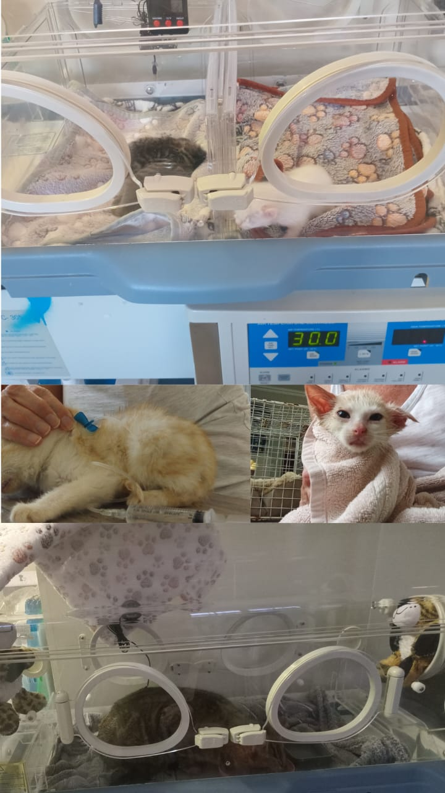

Where your money goes
No administration fees. No salaries. Every rand donated goes to one of these four areas.
Vet Bills
The largest single cost. Emergency visits, surgery, medication, and routine treatments for cats in our care.
Sterilisation
Each procedure costs hundreds of rands. It is the most impactful investment we make — preventing entire future litters of suffering.
Food & Supplies
Ongoing food for cats in foster care and colony cats, plus litter, carriers, and basic medical supplies.
Emergency Rescues
Urgent interventions — transport, immediate vet treatment, and stabilisation for cats found in critical condition.
Make a donation
Choose your payment method below.
R250 = one sterilisation · R500 = a vet consultation · R1 000 = a week of emergency care
| Bank | CAPITEC BUSINESS |
| Account Type | Current/Transact |
| Account Name | Kathu Cats |
| Account No. | 1052 0659 02 |
| Branch Code | 450105 |
| Reference | Donation + Your Name |
We are honest about where your money goes
"This work continues no matter what — donations help reduce the growing burden of vet bills and allow more animals to be helped. Without them, the work still happens, but it costs the volunteers more, and we can do less."
If you want to know more about how a specific donation was used, contact us. We will answer directly.
